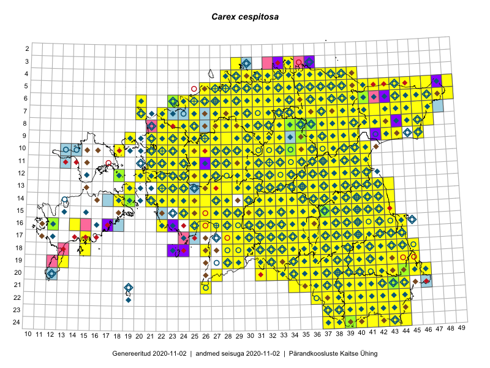

Carex cespitosa
Uuendatud: 2016-12-01
Kaardile koondatud taksonid: Carex caespitosa Hook.; Carex cespitosa L.

Kaart põhineb 664 kirjel, neist vaatlusi 660 ja eksemplare 4.
Kuvatud viited 20 esimesele andmebaasikirjele, ülejäänud PlutoFis
- Tiit Hallikma, Toomas Kukk, Indrek Tammekänd: 2015-06-09: 12-28: ala
- Malle Leht: 2015-07-09: : ala
- Meeli Mesipuu, Kadri Tali: 2015-04-30: 17-39: ala
- Peedu Saar, Timo Luhamäe: 2015-05-13: 06-39: ala
- Thea Kull: 2015-07-07: 16-40: ala
- Peedu Saar, Liina Oja: 2015-05-21: 16-25: ala
- Peedu Saar, Liina Oja: 2015-05-20: 18-26: ala
- Toomas Kukk, Thea Kull, Timo Luhamäe, Ott Luuk, Peedu Saar: 2015-06-28: 13-26: ala
- Toomas Kukk, Peedu Saar: 2014-09-12: 07-42: ala
- Toomas Kukk, Indrek Tammekänd: 2015-05-09: 13-27: ala
- Toomas Kukk, Peedu Saar: 2014-09-24: 06-40: ala
- Toomas Kukk, Peedu Saar: 2014-09-24: 06-41: ala
- Rein Kalamees, Kersti Püssa: 2015-08-31: 04-32: ala
- Tiit Hallikma, Indrek Tammekänd, Toomas Kukk: 2015-06-09: 12-29: ala
- Tiit Hallikma, Toomas Kukk: 2015-07-21: 05-45: ala
- Toomas Kukk, Raivo Kalle: 2015-05-14: 09-40: ala
- Toomas Kukk, Raivo Kalle: 2015-05-13: 07-38: ala
- Toomas Kukk, Raivo Kalle: 2015-05-13: 07-37: ala
- Toomas Kukk, Raivo Kalle: 2015-05-12: 10-40: ala
- Toomas Kukk, Raivo Kalle: 2015-05-12: 11-40: ala